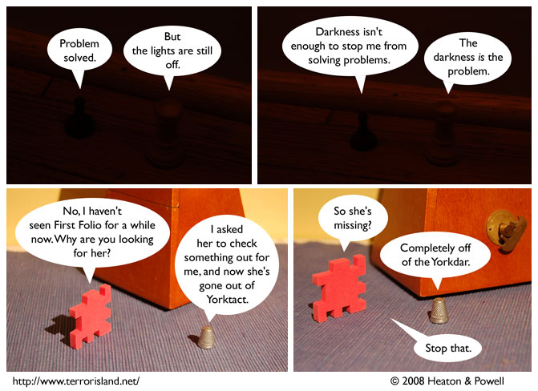

Strip #295
— Wednesday, April 30, 2008
First Folio has been Yorking in action for a while now.
Notes, Thoughts, &c.
Ben’s Notes
I hope the darkness panels aren’t getting old for you, because that set’s going to be around for a long time.
Lewis’s Notes
I hope the ‘York’ schtick isn’t getting old for you, because it’s my favorite part of scripting these days.